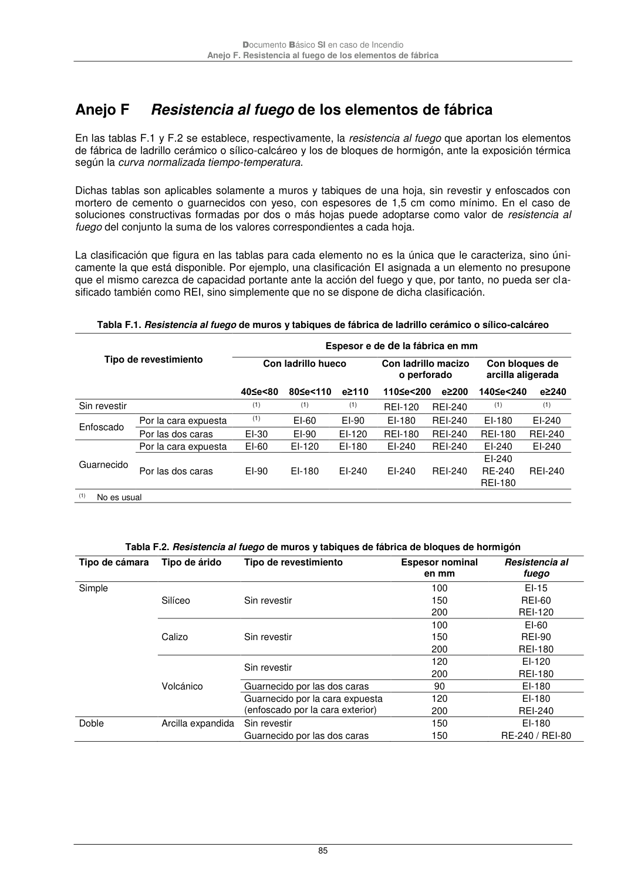

DB-SI · Anejo F Resistencia al fuego de los elementos de fábrica · versión 2025-03-04
SHA256: 0a2e78cd62471d9cc5cfe2efbc6aa39fdbad73c124aea7b039f9de96c141e105 · página física 85 de 92 · métodos de encabezado
solo si están cotejados.
Formatos: Markdown · JSON de bloques · PDF p. 85 · imagen PNG
Documento Básico SI en caso de Incendio Anejo F. Resistencia al fuego de los elementos de fábrica 85 Anejo F Resistencia al fuego de los elementos de fábrica En las tablas F.1 y F.2 se establece, respectivamente, la resistencia al fuego que aportan los elementos de fábrica de ladrillo cerámico o sílico-calcáreo y los de bloques de hormigón, ante la exposición térmica según la curva normalizada tiempo-temperatura. Dichas tablas son aplicables solamente a muros y tabiques de una hoja, sin revestir y enfoscados con mortero de cemento o guarnecidos con yeso, con espesores de 1,5 cm como mínimo. En el caso de soluciones constructivas formadas por dos o más hojas puede adoptarse como valor de resistencia al fuego del conjunto la suma de los valores correspondientes a cada hoja. La clasificación que figura en las tablas para cada elemento no es la única que le caracteriza, sino úni- camente la que está disponible. Por ejemplo, una clasificación EI asignada a un elemento no presupone que el mismo carezca de capacidad portante ante la acción del fuego y que, por tanto, no pueda ser cla- sificado también como REI, sino simplemente que no se dispone de dicha clasificación. Tabla F.1. Resistencia al fuego de muros y tabiques de fábrica de ladrillo cerámico o sílico-calcáreo Tipo de revestimiento Espesor e de de la fábrica en mm Con ladrillo hueco Con ladrillo macizo o perforado Con bloques de arcilla aligerada 40≤e<80 80≤e<110 e≥110 110≤e<200 e≥200 140≤e<240 e≥240 Sin revestir (1) (1) (1) REI-120 REI-240 (1) (1) Enfoscado Por la cara expuesta (1) EI-60 EI-90 EI-180 REI-240 EI-180 EI-240 Por las dos caras EI-30 EI-90 EI-120 REI-180 REI-240 REI-180 REI-240 Guarnecido Por la cara expuesta EI-60 EI-120 EI-180 EI-240 REI-240 EI-240 EI-240 Por las dos caras EI-90 EI-180 EI-240 EI-240 REI-240 EI-240 RE-240 REI-180 REI-240 (1) No es usual Tabla F.2. Resistencia al fuego de muros y tabiques de fábrica de bloques de hormigón Tipo de cámara Tipo de árido Tipo de revestimiento Espesor nominal en mm Resistencia al fuego Simple Silíceo Sin revestir 100 150 200 EI-15 REI-60 REI-120 Calizo Sin revestir 100 150 200 EI-60 REI-90 REI-180 Volcánico Sin revestir 120 200 EI-120 REI-180 Guarnecido por las dos caras 90 EI-180 Guarnecido por la cara expuesta (enfoscado por la cara exterior) 120 200 EI-180 REI-240 Doble Arcilla expandida Sin revestir Guarnecido por las dos caras 150 150 EI-180 RE-240 / REI-80
